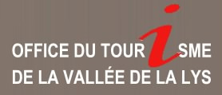
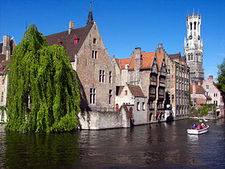
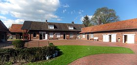
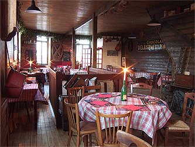
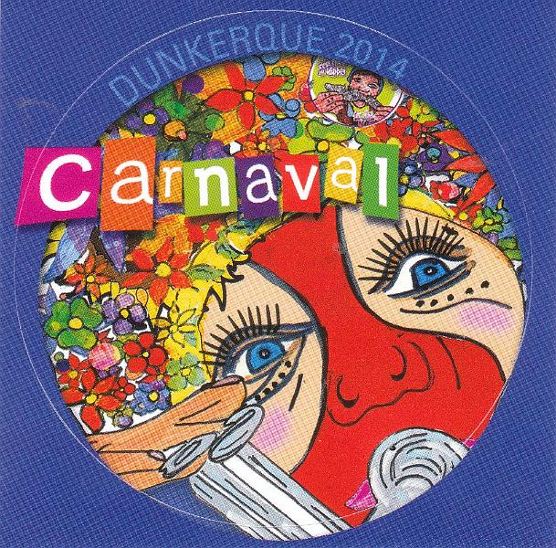

To help you find your way
| The Tourist Office of the Vallée de la Lys
At the bottom of the Mounts of Flanders and close to Lille, the cities of Merville, Neuf-Berquin, Nieppe, Sailly sur la Lys et Steenwerck stretch along the Lys. |
 |
| Tourisme-North
To go out with your family, to wander in the streets, to go hiking, to see the show-stoopers, the genuine must-haves : you will find all you need to prepare your trip on this website |
To explore
| Louvre Lens
This « Second Louvre » is located in Lens in the Pas-de-Calais. It is an independent museum, bound to the Louvre in Paris through a cultural and scientific agreement. The museum is built on the former pit n°9, part of the Lens mines. |
|
| The city of Bruges
Bruges is a Belgium city located in the Flemish Region. It is the main city of and the biggest city in Western Flanders. Bruges is called « The Venice of the North » since it offers numerous canals that circle or cross through the city. |
 |
| Museum of rural life in Steenwerck
Open since 1987, the Museum of rural life displays to young people farm and village activities, and the evolution of accommodation in the beginning of the 20th century. The Museum is perfect for a family outing. Knowledge is shared and conveyed in an enriching and playful setting. Nothing is missing : agricultural machinery, houses, craftsmen, shops and schools. |
 |
| Remembrance Path 14-18
One cannot explain WWI as a series of battles along the front. Far from the battle ground, the population experienced either cohabitation with allied soldiers or the hardship of the occupation. After the war, cities were rebuilt and memorial sites were created. |
To eat
| Estaminet Chez Léon (Estaires)
In his newest restaurant known as l'Estaminet "Chez Léon", Benoit and his team offer local dishes which are elaborated and which gather all the regional flavours of Flanders. You will find there the typical atmosphere of an Estaminet, warm and convivial. |
 |
To have Fun
| Carnaval of Dunkerque
One cannot attend the carnaval of Dunkerque since it is not a “show". You quickly become part of it, you are an entertainer among thousands of entertainers : thanks to a song you recognize, or because you are hailed by a warm carnival fellow. "Each of us chooses his own way to collective joy." Michel DELEBARRE |
 |